Project Leader / FabTitan team project
SkyGuardian
A domestic civil UAV countermeasure system
View my contribution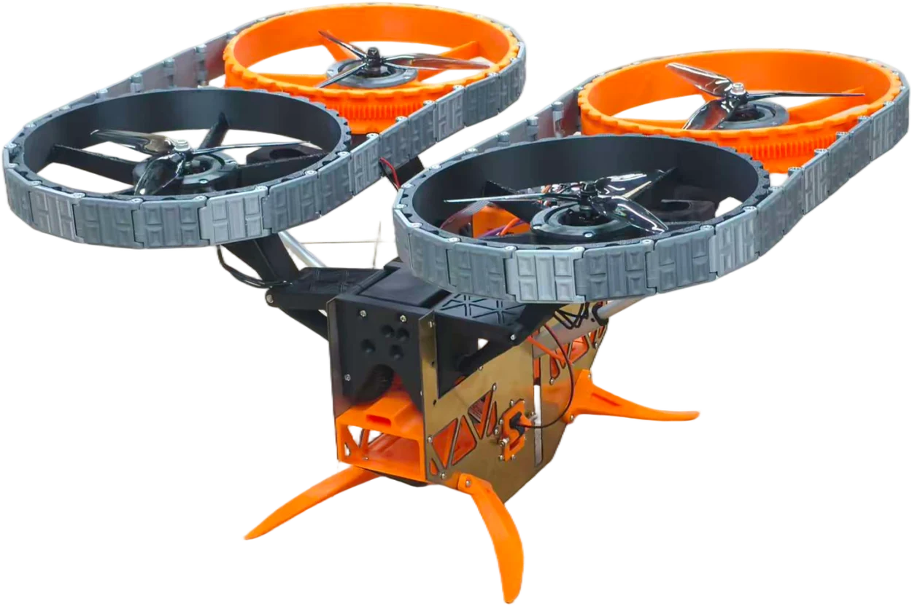
My contribution
Project leadership and commercial strategy
I led the FabTitan project and developed the business case for bringing the team’s prototype into civilian venues.
I defined customer profiles for event organizers and security providers, mapped their purchasing workflows, and developed a pricing strategy. The business model considered equipment purchases for ongoing needs, short-term rentals for temporary events, and software support as a recurring service.
I authored the business plan and developed the pitch deck for the Dongbao Cup campus final. The presentation connected the team’s prototype and test demonstrations to the proposed use cases and purchasing options.
Research
Airspace safety at public events
How could venue teams identify unauthorized drone activity when event layouts, lighting, and sightlines change?
Unauthorized low-altitude flights can create safety and privacy risks at crowded events. The team identified recurring challenges in existing systems, including false alarms, slow responses, fixed installations, and regulations that were still evolving.
Those constraints shaped a mobile concept. The team explored a ground-and-air platform that could be repositioned at a site, drawing on several sources of sensor data to help an operator assess an alert.
- Mobility
- Support temporary venues and changing site layouts.
- Detection
- Cross-check observations across different lighting conditions.
- Serviceability
- Use replaceable modules and prioritize locally available parts.
Prototype
A platform designed to move
XJ-A0 brought ground mobility and flight into a single prototype for temporary deployment.
The team developed a modular layout to make parts easier to replace during iteration. It built an integrated prototype, refined the packaging, and used simulation to study the transition between ground travel and flight.
3D views of the ground configuration
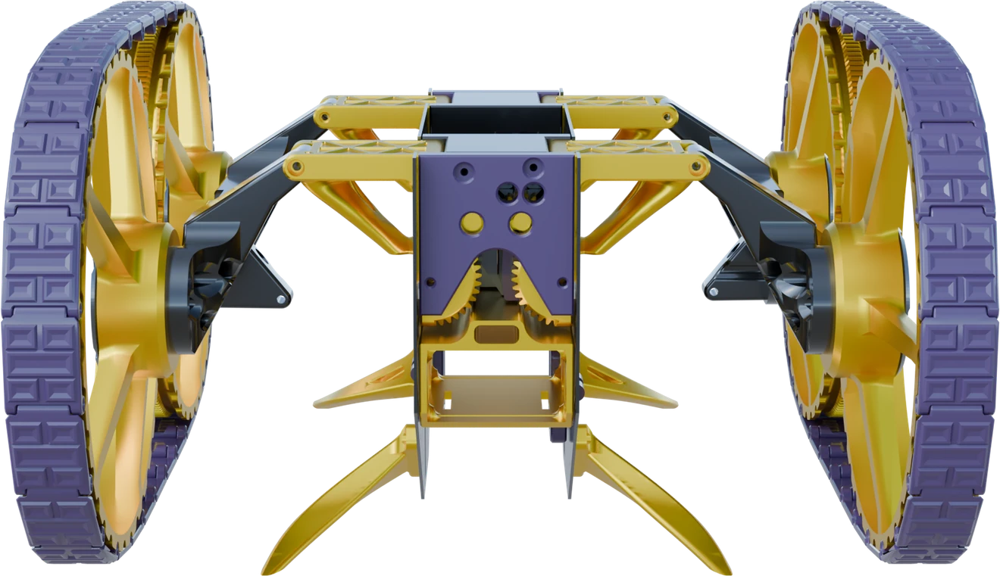
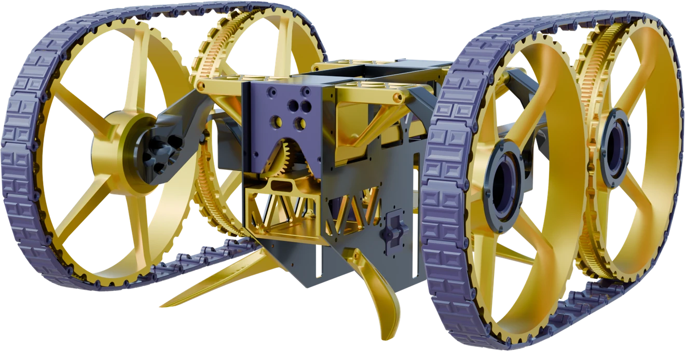
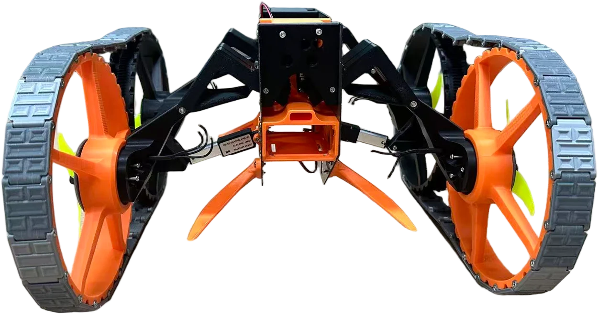
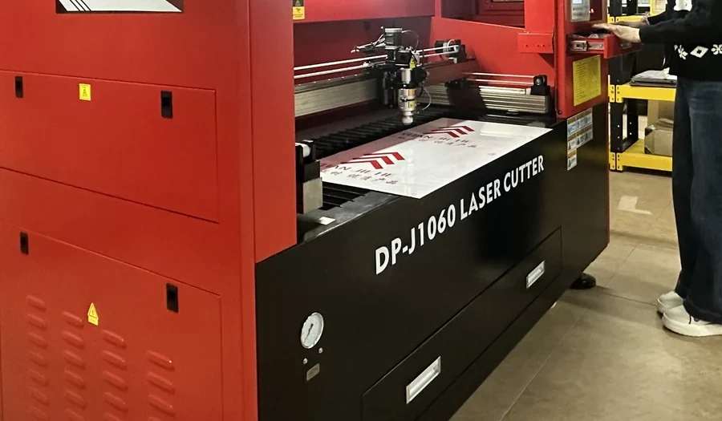
Development milestones
- Concept
Defined the system architecture and development plan.
- Integration
Built the first integrated prototype.
- Iteration
Refined the modular design and carried out integration tests.
- Use cases
Explored applications at temporary venues and large public events.
- Campus final
Presented the prototype, test demonstrations, and roadmap.
Development process
The team explored the platform’s form in 3D, prepared parts in the workshop, and checked how the physical prototype moved on the bench and outdoors.
-
Model the platform
The team used two exterior studies to explore how the platform could change from ground travel to flight.
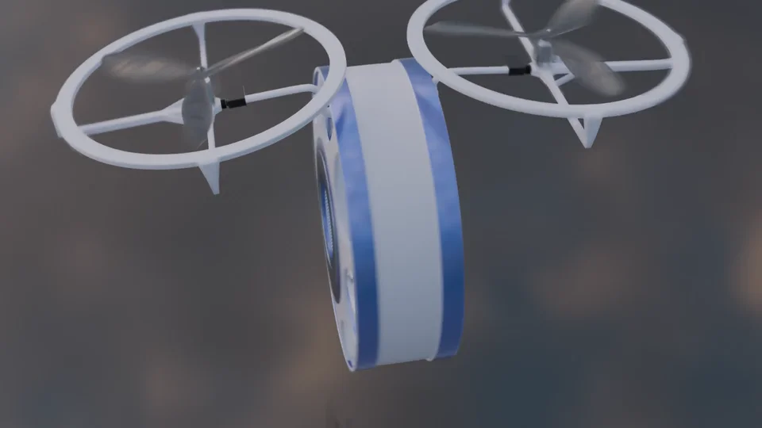
Play concept study 0:13Alternative concept. An exterior study of a circular platform. 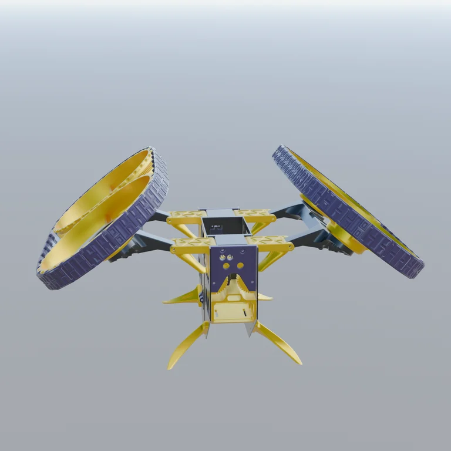
Play XJ-A0 animation 0:05XJ-A0 model. The prototype’s transition visualized in 3D. -
Prepare parts and check the chassis
Workshop records show part preparation and a bench check of wheel motion on the physical prototype.
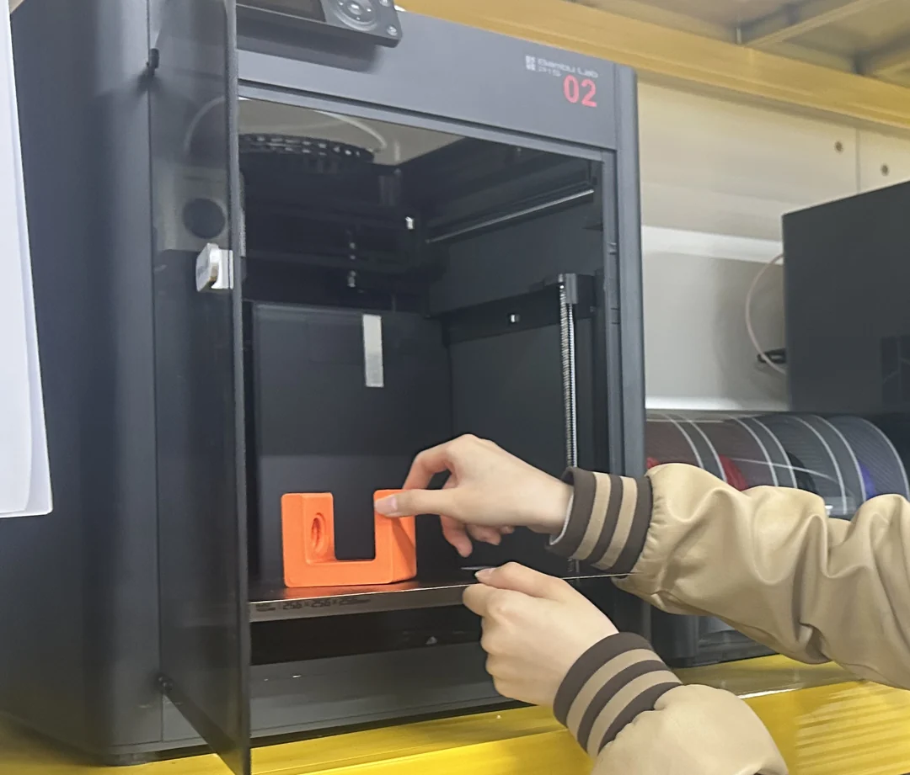
Workshop part preparation. A photograph from the team’s build documentation. 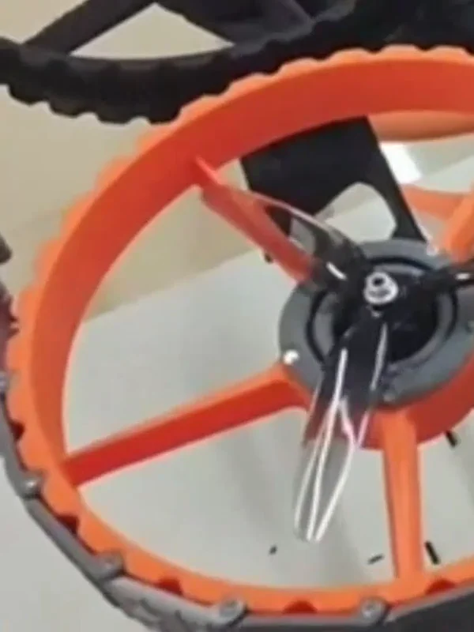
Play bench check 0:05Bench check. A close-up of the wheel assembly changing orientation. -
Try the prototype outdoors
The team drove the prototype across a campus courtyard. This excerpt shows ground travel during the trial that also included a brief lift-off.
See the lift-off excerpt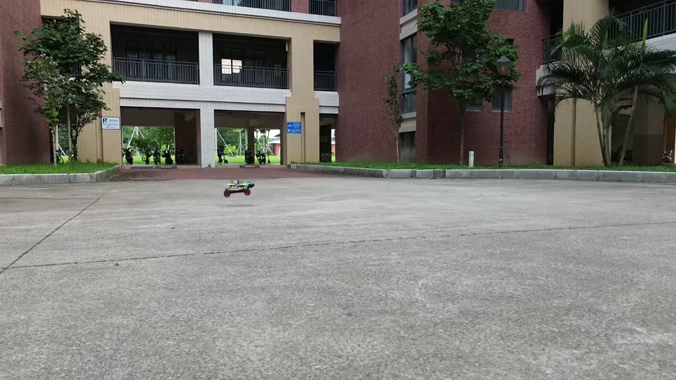
Play ground trial 0:07Ground mobility. An earlier excerpt from the outdoor prototype trial.
Testing
What the team tested
The team ran outdoor mobility trials with the physical prototype and demonstrated visual drone detection.
For visual detection, the team screened a collection of 20,000 images and retained 10,000 for model training.
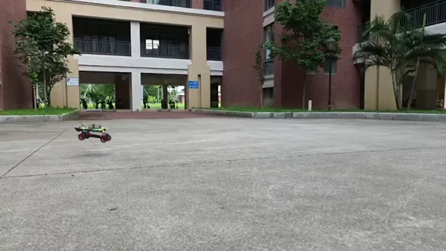
Play outdoor trial 0:06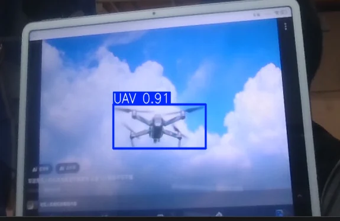
Responsible deployment
Operator oversight and privacy
The team proposed that operators review alerts, assess site conditions, and confirm their authorization before taking action.
The team also proposed collecting only the data needed for each alert, processing it locally where possible, and using role-based access and audit logs to protect footage and records.
The roadmap proposed further prototype refinement and pilot evaluations with event and venue teams.